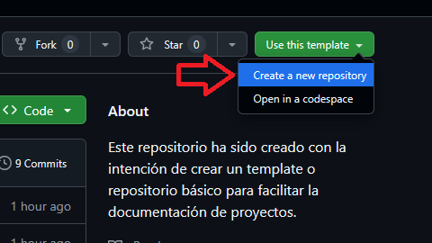
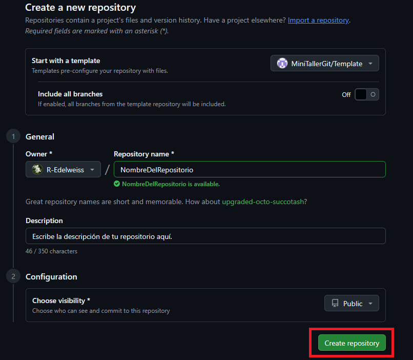
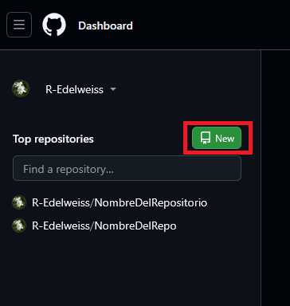
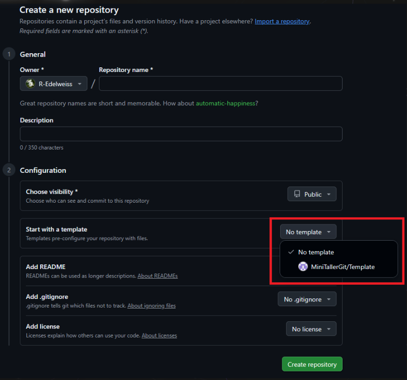

Haz clic en Use this template → Create a new repository.

Escribe un nombre para tu repositorio y selecciona Initialize with README si es necesario. Haz clic en Create repository from template.

Con esto tendrás tu propio repositorio basado en el template.
💡 Nota extra
Ahora que ya formas parte de la organización MiniTallerGit, cada vez que crees un nuevo repositorio,
el template de la organización aparecerá como opción disponible automáticamente.
Vista al crear un nuevo repositorio sin template:

Vista al crear un nuevo repositorio (con template disponible):
